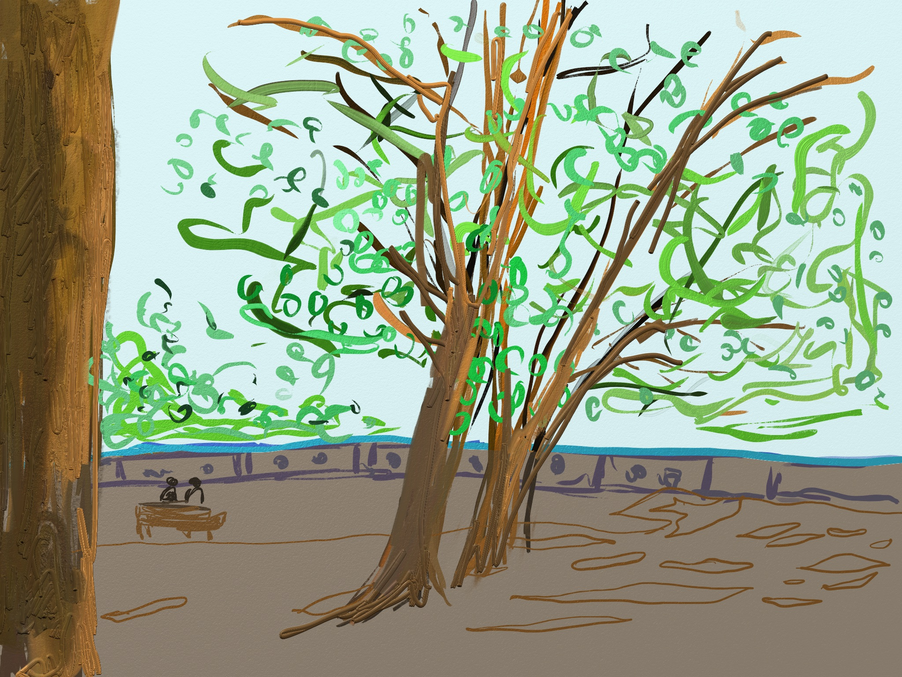

- 인사
- 감동
- 마음
- 행동
The US photographer Susan Meiselas first began shooting women who took their clothes off for a living in 1972,
when she was in her mid-20s.
Travelling around New England, she’d encountered the contry fairs that toured
rural parts of the northeastern US;
many had a ‘girl show’ tent, where women danced in striptease acts. Meiselas was fascinated.
Over the course of three summers,
me to
she haunted the fairgrounds, befriending dancers and sneaking backstage to capture what their lives were really like.
She also recorded hundreds of hours of interviews. In order to blend into the crowd and get the shots she needed,
she sometimes dressed like a man.
